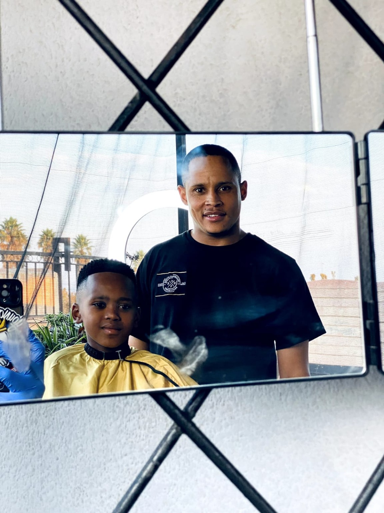

FADE
Clean transitions and sharp finishing tailored to your look.
PALMRIDGE • GAUTENG • SOUTH AFRICA
Precision. Style. Confidence.
Professional barbering with a personal touch — built around clean work, sharp detail, community and purpose.
Crosses & Clippers is the barbering brand of Davian Benjamin — built around precision, confidence, growth and giving back.
THE PERSON BEHIND THE CLIPPERS

A barber. A builder. A local business in the making.
Crosses & Clippers is founded by Davian Benjamin, with the goal of turning barbering into something bigger than a service — a place where people can trust the craft and feel proud of the result.
From everyday cuts to detailed designs, the focus is simple: take the time, get the details right and keep improving.
READ MY STORY ↗WHAT WE DO
Clean transitions and sharp finishing tailored to your look.
Controlled detail around the edges with a clean, natural finish.
Precise hairline and beard detailing for a crisp finish.
Bring your reference, idea or design and make it your own.
THE PORTFOLIO

THE STORY BEHIND THE BRAND
My Story is about the work behind Crosses & Clippers — the people who supported me, the craft I have built and the determination to keep moving forward.
The story is personal, but it is also about community: using barbering to rebuild, connect, create opportunities and leave people feeling more confident than when they arrived.
The full story is carried by the three-minute video here. The other My Story pictures and shorter videos have intentionally been removed from this section so the focus stays on the story itself.
COMMUNITY • SUPPORT • OPPORTUNITY
Legends Barber founder Sheldon Tatchell donated barbershop equipment to an Eden Park youngster. Besides running multiple successful businesses, Sheldon is known for charitable causes aimed at uplifting youth.
“Today, I am in Eden Park visiting a barber who just recovered from drug abuse. He now tries to rebuild his life, cutting hair from his home. I came to bless him with equipment, but more than that, I am here to give him hope.”
— Sheldon Tatchell


COMMUNITY • GIVING BACK
Crosses & Clippers is proud to support Saint Mary's Children's Home. Only photographs supplied for Saint Mary's will be displayed in this section.
Saint Mary's photographs will be displayed here once supplied.
CLIENT FEEDBACK
Owner login lets Davian approve or remove reviews and manage the client database. The public review form never exposes private client records.
“THE GOAL ISN'T JUST TO CUT HAIR.
IT'S TO LEAVE A MARK.”
GET IN TOUCH
Choose a booking option below. For the fastest response, WhatsApp Davian directly.
APPOINTMENT
Send your booking request directly to Davian on WhatsApp.
PRIVATE AREA